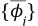
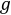
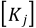
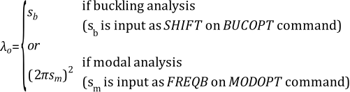

The following extraction methods and related topics are available:
The eigenvalue and eigenvector problem needs to be solved for mode-frequency and buckling analyses. It has the form of:
 | (14–198) |
where:
| [K] = structural stiffness matrix |
 = eigenvector = eigenvector |
| λi = eigenvalue |
| [M] = structural mass matrix |
For prestressed modal analyses, the [K] matrix includes the stress stiffness matrix [S]. For eigenvalue buckling analyses, the [M] matrix is replaced with the stress stiffness matrix [S]. The discussions given in the rest of this section assume a modal analysis (ANTYPE,MODAL) except as noted, but also generally applies to eigenvalue buckling analyses.
The eigenvalue and eigenvector extraction procedures available include the Block Lanczos, PCG Lanczos, Supernode, Subspace, unsymmetric, damped, and QR damped methods (MODOPT and BUCOPT commands) outlined in Table 14.1: Procedures Used for Eigenvalue and Eigenvector Extraction. Each method is discussed subsequently. Shifting, applicable to most methods, is discussed in a later section (see Shifting).
Table 14.1: Procedures Used for Eigenvalue and Eigenvector Extraction
| Procedure | Input | Usages | Applicable Matrices++ | Reduction | Extraction Technique |
|---|---|---|---|---|---|
| Supernode | MODOPT, SNODE | Symmetric (but not applicable to buckling) | [K], [M] | None | Internally uses node grouping, reduced, and Lanczos methods |
| Block Lanczos | MODOPT, LANB | Symmetric | [K], [M] | None | Lanczos which internally uses QL algorithm |
| PCG Lanczos | MODOPT, LANPCG | Symmetric (but not applicable for buckling) | [K], [M] | None | Lanczos which internally uses QL algorithm |
| Subspace | MODOPT, SUBSP | Symmetric | [K], [M] | None | Internally uses Subspace method with auto-shift |
| Unsymmetric | MODOPT, UNSYM | Unsymmetric matrices | [K*], [M*] | None | Lanczos which internally uses QR algorithm |
| Damped | MODOPT, DAMP | Symmetric or unsymmetric damped systems | [K*], [C*], [M*] | None | Lanczos which internally uses QR algorithm |
| QR Damped | MODOPT, QRDAMP | Symmetric or unsymmetric damped systems | [K*], [C*], [M] | Modal | QR algorithm for reduced modal damping matrix |
| ++ [K] = stiffness matrix, [C] = damping matrix, [M] = mass or stress stiffening matrix, * = can be unsymmetric | |||||
The Block Lanczos and PCG Lanczos methods both use Lanczos iterations to extract the requested eigenvalues. However, the Block Lanczos method uses the sparse direct solver, while the PCG Lanczos method uses the PCG iterative solver internally to solve the necessary system of equations at each Lanczos iteration.
The Supernode (SNODE) solver is used to solve large, symmetric
eigenvalue problems for many modes (up to 10,000 and beyond) in one
solution. A supernode is a group of nodes from a group of elements.
The supernodes for the model are generated automatically by the solver.
This method first calculates eigenmodes for each supernode in the
range of 0.0 to FREQE*RangeFact (where RangeFact is specified
by the SNOPTION command and defaults to 2.0), and
then uses the supernode eigenmodes to calculate the global eigenmodes
of the model in the range of FREQB to FREQE (where FREQB and FREQE are specified by the MODOPT command). Typically, this method offers faster solution
times than Block Lanczos or PCG Lanczos if the number of modes requested
is more than 200.
The Supernode eigensolver uses an approximate method compared to the Block Lanczos and PCG Lanczos solutions. The accuracy of the Supernode solution can be controlled by the SNOPTION command. By default, the eigenmode accuracy is based on the frequency range used (assuming no rigid body modes are in the model), as shown in the following table.
| Frequency Range | Accuracy of Supernode solution |
| 0 - 100 Hz | 0.01 percent error |
| 100 - 200 Hz | 0.05 percent error |
| 200 - 400 Hz | 0.20 percent error |
| 400 - 1000 Hz | 1.00 percent error |
| 1000 Hz and higher | 3.0 - 5.0 percent error |
Typically, the reason for seeking many modes is to perform a subsequent
mode-superposition or PSD analysis to solve for the response in a higher frequency range.
The error introduced by the Supernode eigensolver (shown in the table above, assuming no
rigid body modes are in the model) is small enough for most engineering purposes. You can
use the SNOPTION command to increase the accuracy of the solution, but
at the cost of increased computing time. Increasing the value of
RangeFact (on the SNOPTION command)
results in a more accurate solution.
In each step of the Supernode eigenvalue calculation, a Sturm check is performed. The occurrence of missing modes in the Supernode calculation is rare.
The lumped mass matrix option (LUMPM,ON) is not allowed when using the Supernode mode extraction method. The consistent mass matrix option will be used regardless of the LUMPM setting.
The Supernode eigensolver has the following known limitations:
If rigid body modes are present in the model and are part of the eigen-solution, the accuracy of the lower flexible modes is slightly deteriorated due to the rigid body modes present and the theoretical limitation of the Supernode eigensolver. In this case, you should increase the values of
RangeFactto be higher than 2.0 (default) and smaller than 10.0 to achieve better accuracy for the lower flexible modes.Since the supernodes are formed arbitrarily and automatically, differences in domain decomposition (that is, using a different number of cores with distributed-memory parallel processing) slightly affects the solution accuracy. However, the resulting inaccuracy is normally less than 0.1 % in the eigenvalue solution.
The Supernode eigensolver does not use equation pivoting logic to process or factorize local equations. Therefore, any finite element formulation that requires pivoting to achieve an equation solution, such as an element formulation with Lagrangian multipliers (u-P formulation), is not supported. In this situation, the program automatically switches to the Block Lanczos modal solution.
The Block Lanczos eigenvalue extraction method (accessed with MODOPT,LANB or BUCOPT,LANB) is available for large symmetric eigenvalue problems.
The block shifted Lanczos algorithm is a variation of the classical Lanczos algorithm, where the Lanczos recursions are performed using a block of vectors, as opposed to a single vector. Additional theoretical details on the classical Lanczos method can be found in Rajakumar and Rogers([197]).
A block shifted Lanczos algorithm, as found in Grimes et al.([196]) is the theoretical basis of the eigensolver. The Block Lanczos method employs an automated shift strategy to extract the number of eigenvalues requested.
At the end of the Block Lanczos calculation, the solver can perform a Sturm sequence check if requested by the user. (The Sturm check is off by default and is not needed for most applications.) This check computes the number of negative pivots encountered in the range that the minimum and maximum eigenvalues encompass. This number will match the number of converged eigenvalues unless some eigenvalues have been missed. Block Lanczos will report the number of missing eigenvalues, if any.
Use of the Block Lanczos method for solving larger models (1,000,000 DOF, for example) with many constraint equations (CE) and 3-D solid elements can require a significant amount of computer memory. The alternative method of PCG Lanczos, which internally uses the PCG solver, could result in savings of memory and computing time.
The theoretical basis of this eigensolver is found in Grimes et al.([196]), which is the same basis for the Block Lanczos eigenvalue extraction method. However, the implementaion differs somewhat from the Block Lanczos eigensolver, in that the PCG Lanczos eigensolver:
does not employ an automated shift strategy during the eigenvalue analysis.
is only available for modal analyses and is not applicable to buckling analyses.
The unsymmetric eigensolver (accessed with MODOPT,UNSYM) is applicable whenever the system matrices are unsymmetric. For example, an acoustic fluid-structure interaction problem using FLUID30 elements results in unsymmetric matrices. Also, certain problems involving the input matrix element MATRIX27 and/or COMBI214 element, such as in brake squeal problems, can give rise to unsymmetric system matrices. A generalized eigenvalue problem given by the following equation:
(14–199) |
can be setup and solved using the mode-frequency analysis (ANTYPE,MODAL). The matrices [K] and [M] are the system
stiffness and mass matrices, respectively. Either or both [K] and
[M] can be unsymmetric. {ϕi} is called
the eigenvector. It represents the right eigenvector. The left eigenvector,
which is extracted for mode-superposition harmonic analysis (MODOPT with ModType = BOTH),
satisfies the following equation:
(14–200) |
where:
 = ith left eigenmode
= ith left eigenmode
The method employed to solve the unsymmetric eigenvalue problem is a subspace approach based on a method designated as Frequency Derivative Method. The FD method uses an orthogonal set of Krylov sequence of vectors:
(14–201) |
To obtain the expression for the sequence of vectors, the generalized eigenvalue Equation 14–199 is differentiated with respect to λi to get:
(14–202) |
Substituting Equation 14–202 into Equation 14–199 and rearranging after applying a shift s, the starting expression for generating the sequence of vectors is given by:
(14–203) |
 | (14–204) |
where:
| s = an initial shift |
The general expression used for generating the sequence of vectors is given by:
(14–205) |
This matrix equation is solved by a sparse matrix solver (EQSLV, SPARSE). However, an explicit specification of the equation solver (EQSLV command) is not needed.
The subspace made of these derivatives allows the program to
find the closest eigensolutions from this shift point. The shift value s is initially determined using the FREQB value on the MODOPT command.
For a large number of eigenvalues, the UNSYM extraction algorithm is able to move automatically to a new shift if the first solve only finds a subset of eigensolutions. This process will be repeated until all the required eigenvalues are found, unless the algorithm fails several times to find any accurate eigenvalues.
A subspace transformation of Equation 14–199 is performed using the sequence of orthogonal vectors which leads to the reduced eigenproblem:
(14–206) |
where:
| [K*] = [Q]T[K] [Q] |
| [M*] = [Q]T[M] [Q] |
The eigenvalues of the reduced eigenproblem (Equation 14–206) are extracted using a direct eigenvalue solution procedure. The eigenvalues μi are the approximate eigenvalues of the original eigenproblem and they converge to λi with increasing subspace size m. The converged eigenvectors are then computed using the subspace transformation equation:
(14–207) |
This method does not perform a Sturm Sequence check for possible missing modes. At the lower end of the spectrum close to the shift (input as FREQB on MODOPT command), the frequencies usually converge without missing modes.
If the eigensolutions are real, the frequency (Hz) is output as:
If the eigensolutions are complex, the complex frequency (Hz) is output as:
For more information, see Complex Eigensolutions.
The subspace eigensolver (accessed with BUCOPT,SUBSP and MODOPT,SUBSP) is applicable for buckling and modal analyses in which the system matrices are symmetric. This eigensolver uses basically the same algorithm as the unsymmetric eigensolver (accessed with MODOPT,UNSYM) to solve the generalized eigenvalue problem given by the following equation.
For buckling analysis:
(14–208) |
where:
| [K] = structural stiffness matrix |
| [S] = stress stiffness matrix |
| λi = ith eigenvalue (used to multiply the loads that generated [S]) |
| {Ψi} = ith eigenvector of displacements |
For modal analysis:
 | (14–209) |
where:
| [K] = structural stiffness matrix |
| [M] = mass matrix |
| λi = ith eigenvalue |
| {ϕi} = ith eigenvector of displacements |
The advantage of the SUBSP method over the Block Lanczos method is that both the [K] and [S] / [M] matrices can be indefinite at the same time.
Buckling Analysis
Using the options of the BUCOPT command, the program can find the eigenvalues in one of two ways:
In a specified load multiplier range of interest (
RangeKey= RANGE), orAround an initial shift (
RangeKey= CENTER).
Note that when using the CENTER option, the automatic (internal) shifting strategy of the algorithm is disabled. The eigenvalues found around the initial shift (CENTER value) are available; the solver may not find eigenvalues far away from the CENTER value.
Modal Analysis
Some options of the subspace algorithm can be set using the SUBOPT command. These include memory management and Sturm sequence check. By default, the Sturm check is turned off.
The damped eigensolver (accessed with MODOPT,DAMP) is applicable only when the system damping matrix needs to be included in Equation 14–198, where the eigenproblem becomes a quadratic eigenvalue problem given by:
(14–210) |
where:
| [C] = damping matrix |
Matrices may be symmetric or unsymmetric.
The method employed to solve the damped eigenvalue problem is the same as for the UNSYM option. We first transform the initial quadratic equation (Equation 14–210) in a linear form applying the variable substitutions:
To form the equivalent UNSYM eigenvalue problem.
(14–211) |
Solutions of Equation 14–210 and Equation 14–211 are equivalent, except that only the first-half part of the eigenvectors  is considered.
The UNSYM method uses Equation 14–211. The default blocksize value to solve a Quadratic Damp Eigenproblem is set to four. This value can be controlled using the blocksize parameter of the MODOPT command.
This method does not perform a Sturm Sequence check for possible
missing modes. At the lower end of the spectrum, close to the shift
(input as FREQB on the MODOPT command), the frequencies usually converge without missing modes.
Furthermore, this method does not employ an automated shift strategy
during the eigenvalue analysis.
The complex frequency (Hz) is output as:
For more information, see Complex Eigensolutions.
The QR damped method (accessed with MODOPT,QRDAMP) is a procedure for determining the complex eigenvalues and corresponding eigenvectors of damped linear systems. This eigensolver allows for nonsymmetric [K] and [C] matrices. The eigensolver is computationally efficient compared to the damped eigensolver (MODOPT,DAMP). This method employs the modal orthogonal coordinate transformation of system matrices to reduce the eigenvalue problem into the modal subspace. The QR algorithm is then used to calculate eigenvalues of the resulting quadratic eigenvalue problem in the modal subspace.
The equations that follow apply to Rayleigh and element-based damping in a QR Damped modal analysis. For the equations with constant structural damping (input with DMPSTR or MP,DMPR), refer to QR Damped Method with Constant Structural Damping.
The equations of elastic structural systems without external excitation can be written in the following form:
 | (14–212) |
(See Equation 15–5 for definitions).
It has been recognized that performing computations in the modal subspace is more efficient than in the full eigenspace. The stiffness matrix [K] can be symmetrized by rearranging the unsymmetric contributions; that is, the original stiffness matrix [K] can be divided into symmetric and unsymmetric parts. By dropping the damping matrix [C] and the unsymmetric contributions of [K], the symmetric eigenvalue problem is first solved to find real eigenvalues and the corresponding eigenvectors. In the present implementation, the unsymmetric element stiffness matrix is zeroed out for the symmetric eigenvalue problem. Following is the coordinate transformation (see Equation 14–104) used to transform the full eigenvalue problem into modal subspace:
(14–213) |
where:
| [Φ] = eigenvector matrix normalized with respect to the mass matrix [M] |
| {y} = vector of modal coordinates |
By using Equation 14–213 in Equation 14–212, we can write the differential equations of motion in the modal subspace as follows:
(14–214) |
where:
| [Λ2] = a diagonal matrix containing the first n eigen frequencies ωi |
For classically damped systems, the modal damping matrix [Φ]T[C][Φ] is a diagonal matrix with the diagonal terms being 2ξiωi, where ξi is the damping ratio of the i-th mode. For non-classically damped systems, the modal damping matrix is either symmetric or unsymmetric. Unsymmetric stiffness contributions of the original stiffness are projected onto the modal subspace to compute the reduced unsymmetric modal stiffness matrix [Φ]T [Kunsym] [Φ].
Introducing the 2n-dimensional state variable vector approach, Equation 14–214 can be written in reduced form as follows:
(14–215) |
where:
 | (14–216) |
(14–217) |
The 2n eigenvalues of Equation 14–215 are calculated using the QR algorithm (Press et al.([255])). The inverse iteration method (Wilkinson and Reinsch([358])) is used to calculate the complex modal subspace eigenvectors. The full complex eigenvector, {ψ}, of the original system is recovered using the following equation:
(14–218) |
Out of 2n solutions, only n solutions are output for post-processing. When the complex eigenvalues are complex conjugate pairs, only the positive imaginary solution (positive frequency) is retained. In the case of high damping, all overdamped modes are also retained.
When system matrices are unsymmetric and structural damping is present, the complex eigenvalues are not complex conjugate pairs, and the QR Damped Method is not recommended.
The complex frequency (Hz) is output as:

For more information, see Complex Eigensolutions.
When a constant structural damping ratio is defined or an element
generating a complex stiffness is present in a QR damped modal analysis
with the complex mode shapes requested (Cpxmod = YES on MODOPT), the state-space matrix  from Equation 14–217 becomes
complex. This can be written as:
from Equation 14–217 becomes
complex. This can be written as:
(14–219) |
where:
| = constant structural damping coefficient (input with DMPSTR) |
 = number of materials with MP,DMPR input = number of materials with MP,DMPR input |
 = constant structural damping coefficient
for material j (input with MP,DMPR) = constant structural damping coefficient
for material j (input with MP,DMPR) |
|  = portion of structural stiffness matrix based on material j |
| = number of elements with specified imaginary stiffness matrix |
| = imaginary element stiffness matrix |
Various shifting strategies are used by most of the extraction methods in an effort to improve the accuracy, robustness, and efficiency of the algorithms. The logic on how those shift values are chosen is discussed in this section.
In some cases it is desirable to shift the values of eigenvalues either up or down. These fall in two categories:
Shifting down, so that the solution of problems with rigid body modes does not require working with a singular matrix.
Shifting up, so that the bottom range of eigenvalues will not be computed, because they had effectively been converted to negative eigenvalues. This will, in general, result in better accuracy for the higher modes. The shift introduced is:
(14–220) |
where:
| λ = desired eigenvalue |
| λ0 = eigenvalue shift |
| λi = eigenvalue that is extracted |
λ0, the eigenvalue shift is computed as:
 | (14–221) |
When using the Block Lanczos or PCG Lanczos method, if no user
input is given for SHIFT (BUCOPT command) or FREQB (MODOPT command), the following logic is used:
(14–222) |
where Mii and Kii are the diagonals of the [M] and [K] matrices, respectfully. The
summation is taken over all terms where Kii ≠ 0 and where < 10e4. The number of such
terms is n.
When using the PCG Lanczos method, if a Lev_Diff value of 1, 2, 3, or 4 is chosen (either automatically or by the
user, see PCGOPT), then -λ0 from Equation 14–222 is used when rigid body modes
are detected in order to avoid working with indefinite matrices with
the PCG iterative solver. When using Lev_Diff = 5, λ0 is used as with the Block Lanczos
method.
Equation 14–220 is combined with Equation 14–198 to give:
(14–223) |
Rearranging,
(14–224) |
or
 | (14–225) |
where:
| [K]' = [K] - λ0 [M] |
It may be seen that if [K] is singular, as in the case of rigid body motion, [K]' will not be singular if [M] is not totally zero (which is normally true) and if λ0 is input as a non-zero number.
Once λi is computed, λ is computed from Equation 14–220 and reported.
Repeated eigenvalues occur, for example, for a thin, axisymmetric pole. Two independent sets of orthogonal motions are possible corresponding to the same frequency.
In this case, the eigenvectors are not unique, as there is an infinite number of correct solutions. The repeated eigenvectors can be computed accurately when all are extracted.
In the special case of two or more identical but disconnected structures run as one analysis, eigenvectors may include components from more than one substructure. To reduce confusion in such cases, you should run a separate analysis for each structure.
For problems involving spinning structures with gyroscopic effects, and/or damped structural eigenfrequencies, the eigensolutions obtained with the Damped Method and QR Damped Method are complex. For problems involving frictional contact, such as brake squeal analyses, or problems involving structural damping, the eigensolutions obtained with the Damped Method, QR Damped Method, or Unsymmetric Method are also complex. The eigenvalues are given by:
(14–226) |
where:
 = complex eigenvalue (rd/s) = complex eigenvalue (rd/s) |
| σi = real part of the eigenvalue (stability value) |
| ωi = imaginary part of the eigenvalue (damped frequency) |
j =
 |
Complex eigenvalues generally come in complex conjugate pairs, except when system matrices are unsymmetric and structural damping is present.
The dynamic response of the system is given by:
(14–227) |
where:
| t = time |
The ith eigenvalue is stable if σi is negative and unstable if σi is positive. This does not apply to the UNSYM eigensolver when the eigenvalue is purely real. In this case, the sign of σi is not significant.
Complex Frequency
The complex frequency (Hz) is expressed as:
(14–228) |
Modal damping ratio
The modal damping ratio is given by:
(14–229) |
where:
| αi = modal damping ratio of the ith eigenvalue |
It is the ratio of the actual damping to the critical damping.
Logarithmic decrement
The logarithmic decrement represents the logarithm of the ratio of two consecutive peaks in the dynamic response (Equation 14–227). It can be expressed as:
(14–230) |
where:
| δi = logarithmic decrement of the ith eigenvalue |
| Ti = damped period of the ith eigenvalue defined by: |
(14–231) |
The logarithmic decrement defined in Equation 14–230 is consistent with the API (American Petroleum
Institute) standards for rotating machinery. It is positive for stable motion and obtained
by setting STABVAL = 3 on the PLCAMP and
PRCAMP commands.